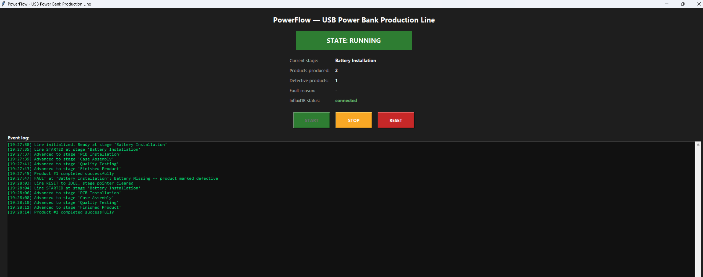
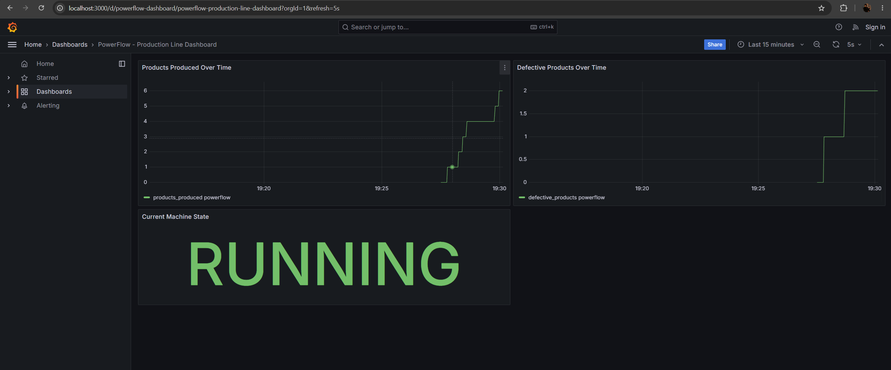

Production Line Concept
The simulator models a 5-stage assembly line for a USB power bank. Each unit passes through every stage in sequence; any stage can randomly trigger a fault, which marks the unit defective and halts the line until the operator resets it.
Battery
Installation
Installation
→
PCB
Installation
Installation
→
Case
Assembly
Assembly
→
Quality
Testing
Testing
→
Finished
Product
Product
Operator HMI
Start, stop, and reset the line. Live state, current stage, product counters, and an event log are shown in real time.

Grafana Dashboard
Products produced and defective products are charted over time, alongside the current machine state, pulled live from InfluxDB.

Tech Stack
- Backend: Python (threading-based finite state machine)
- Frontend / HMI: Tkinter
- Database: InfluxDB 2.x (time-series)
- Dashboard: Grafana (auto-provisioned)
- Deployment: Docker Compose
- Version control: Git + GitHub
Source Code
Full source is available on GitHub.